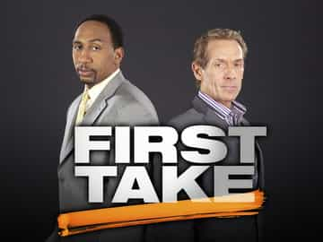

< < < Back
The Rise Of #FeminESPN – Return Of Kings
Over the course of my tenure as an ROK contributor I’ve written a good number of articles on the increasing influence of political correctness, SJWs, and feminism in the world of sports.
From Colin Cowherd being dismissed for pointing out a sad, yet accurate fact about the educational system in the Dominican Republic, to DeAndre Johnson losing his athletic scholarship at Florida State University for punching a woman who hit him first and allegedly called him a racial slur, to Chris Paul being vilified by the media for criticizing a female NBA referee, it’s more than evident that sports on all levels are being infiltrated by the all mighty girl power agenda.
In this article I pointed out that ESPN is the biggest fish in the sports pond:
This network is the true worldwide leader in terms of sports and sports content as their slogan says. They’re currently available in over 80% of house holds in the U.S., boast 12 different sister networks, and are broadcasting in over 200 countries. Needless to say they’re the big man on campus by a wide margin.
There are plenty of other sports media outlets on plenty of other platforms out there. But the biggest and most recognizable sports media brand in the world on television, radio, and the internet is ESPN and they’ve made it very clear that they are going all in on feminism.
Let’s take a look at the path that led to this initiative by the world wide leader.
Shift in focus
A decade and a half ago, there was a noticeable effort by ESPN to report what happens off the field.
Pardon The Interruption, which first aired in 2001, was the one of the first programs of its kind. Hosted by Tony Kornheiser and Michael Wilbon, this marked the first time sports writers were given a daily television platform to voice their opinions on sports topics and issues of the day. The show was a runaway hit and 14 years later it remains a staple in ESPN’s lineup.

A year later Around The Horn joined the fray and saw just as much success. The platform was a little different in that four sports writers debated in round-robin style discussions about the happenings on and off the field. The accolades rolled in from day one and like PTI, is still on the air.
In 2005, ESPN decided to push the envelope and launched a 30 minute show called ESPN Hollywood that featured celebrity reporter and pundit Mario Lopez as one of its co-hosts.
The premise of the show was to focus on the tabloid aspect of professional athletes. What athlete is dating which actress, hocking what product, or what cameos they made in movies and television shows were the main topics of discussion when the program hit the air waves.
The show was an abject failure but it spawned a program called Cold Pizza which later morphed into ESPN First Take which has grown into one of the most watched morning shows on television, sports or otherwise.

What all of these programs have in common is that they opine as much, if not more, about what happens outside the lines, as what happens in them.
In the beginning, these incidents were just side notes or backdrops to what was going on on the field of play. A drunk driving arrest here or an ill-timed off-color comment there were briefly touched on, then the focus jumped back to the games themselves.
But the passing of the torch from one commissioner to another in the biggest and most profitable league in the country set the wheels in motion to eventually create the perfect storm for feminists SJWs alike to weasel their way in and begin to make their mark.
Roger Goodell
In August of 2006, NFL Commissioner Paul Tagliabue announced that he would be stepping down after 17 years on the job. The owners elected 47-year-old Roger Goodell to succeed Tagliabue as their next commissioner and the young upstart wasted no time in establishing himself as a hard-line disciplinarian.
From the jump the newly minted judge, jury, and executioner established very quickly that off the field incidents would result in stiff penalties. While Tagliabue was seemingly soft on these issues, Goodell made no bones about the fact that player conduct was paramount in his initiative to “protect the shield” as he put it.
The game’s safety and integrity were certainly priorities for Goodell, what with the unprecedented penalties he levied on the New England Patriots and New Orleans Saints for “Spygate” and “Bountygate” respectively. But player conduct was where he consistently made headlines as he suspended players in droves without pay for even the smallest of infractions which made him a polarizing figure.
Goodell was unpopular among players but the vast majority of the media seemed to buy into his no nonsense attitude when dealing with players getting into legal trouble. The commissioner certainly had his critics and detractors but by and large, he seemed to have the support of the press.
But Goodell’s support all but vanished when he gave a two-game suspension to a player who was caught on camera knocking out his fiance on an elevator. This was the crack that feminist needed to barge their way into a male dominated sector and force their agenda on the masses.
The left hook heard ’round the world

It’s safe to say that anyone in the civilized world is aware of the saga of former Baltimore Ravens running back Ray Rice on some level. Myself, Athlone McGinnis, Charles Wickelus (AKA 2Wicked), and other ROK contributors have provided plenty of content on the consequences and implications of Rice’s worst moment as a professional that fateful afternoon in Atlantic City.
Goodell suspended Rice for two games when the incident was first reported. This drew the ire of both the media and the public because the suspension wasn’t harsh enough for what was reported. There wasn’t much anyone could do at that point because suspensions were rarely influenced by any one group outside of the NFL Player’s Association.
Then the video was leaked and all hell broke loose.
When the smoke finally cleared, Rice was suspended indefinitely and released from the Ravens, who then decided to tear up his contract. Rice was later reinstated by the NFL but these days he’s considered “radioactive” because of the PR backlash that whatever team decides to pick him up would be subjected to.
Last week Rice sat down with ESPN’s Jamele Hill to make a public plea to convince the public he’s a changed man:
https://www.youtube.com/watch?v=eNjCJTSiF3Y
Hill seems to have been convinced and voiced as much on several of ESPN’s radio talk shows the day after she sat down with the embattled running back. I’m also sure that a lot of people out there probably believe he’s been rehabilitated in some way shape or form and believe he deserves another shot to make a living as player in the NFL.
But the fact that he still hasn’t been contacted by an NFL team for even a private workout shows that owners and GMs are afraid of the backlash that would ensue upon their announcement of Rice’s arrival. They know as well as anyone out there that there are more than enough fans and media pundits who still believe Rice shouldn’t be allowed anywhere near a football field for the rest of his life.
Granted, Rice’s 2013 season was one of the worst of his career and that certainly factors in to teams hesitating on giving him a look. Greg Hardy, who is guilty in the court of public opinion and not a court of law, was signed by the Dallas Cowboys largely because he’s one of the best pass rushers in the league. Talent trumps risk in most situations and pro football is no different.
But Rice’s indiscretion was caught on tape and that’s the main reason he’s still without a team.
The Rice incident was a watershed moment in sports
The Ray Rice saga and the events that followed has caused a paradigm shift of epic proportions on the sports landscape. The sports world was inching toward gynocentrism already, but when Janay was KO’d by her soon-to-be husband, the advancement of the SJW agenda and feminist cause was put into hyperdrive and hasn’t slowed down since.
Seemingly overnight, there has been a rapid influx of female employees at ESPN. They’ve infested every medium imaginable at the company and these days it’s impossible to turn on the television or the radio and not see or hear a woman giving her hamster-saturated opinion disguised as “expertise.”

What’s more is that there are now countless specials and features on the network highlighting female accomplishments in sports. Youth girl’s football teams, female football coaches, and anything pertaining to girls or women playing with boys or men are regularly highlighted and pushed down the throats of its consumers.
There are almost as many examples on the social justice end but they all pale in comparison to the freak show known as Caitlin Jenner receiving the Arthur Ashe Courage award at this year’s ESPYs. Michael Sam, the first openly gay football player to be drafted by an NFL team, won it last year. These selections have distorted, perverted, and completely stripped away the award’s true meaning and credibility.
All of this would have happened anyway because we’ve been headed in this direction for a while. But the left fist of Ray Rice sped up the process and as a result, this once male-dominated sector has become the rancid cesspool it is today.
#feminESPN
On that note, Return Of Kings is launching the hashtag #feminESPN to highlight the various agendas ESPN is pushing, why those agendas are bad for sports, and the overall effect on neomasculinity.
Though it seems the majority of the population is falling in line with ESPN’s initiative, there are definitely cracks in it’s collective armor in both its purveyors and consumers. At some point something will happen that will divide opinions right down the middle and throw the sports world into a tailspin, not unlike what happened with #gamergate last summer.
We hope to educate and inform those who know there is something inherently wrong with what is going on in sports as well as men who aren’t quite sure what’s happening to their favorite pastimes. That way, when the shit hits the fan (and it will) we’ll be ready to fight back.
Is this really going to change anything? It’s hard to say. The SJWs in the sports world are large in numbers to be sure and have the backing of wealthy and influential people at their disposal so the odds are pretty long that this will lead to any substantial shift or change.
However, #gamergate severely crippled the SJW machine and their cronies in many different ways and the effects of that hashtag are still being felt a full year after it was launched. Maybe #feminESPN takes a while to permeate the public, maybe it takes off immediately, and maybe it doesn’t make so much as a dent.
But as the most recognizable manosphere brand on the web, we have a responsibility to make our readers aware of the covert brainwashing that is happening right in front of our faces and how our own are being used against us to do it.
Similar to red pill knowledge, awareness of this trend is paramount is and in the coming days we intend to deliver.
Read Next: How White Knighting Is Killing The NFL


{kind=link}
{kind=link}
{kind=link}